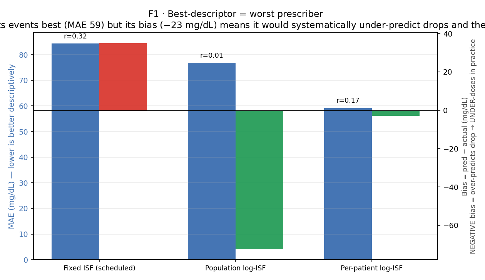
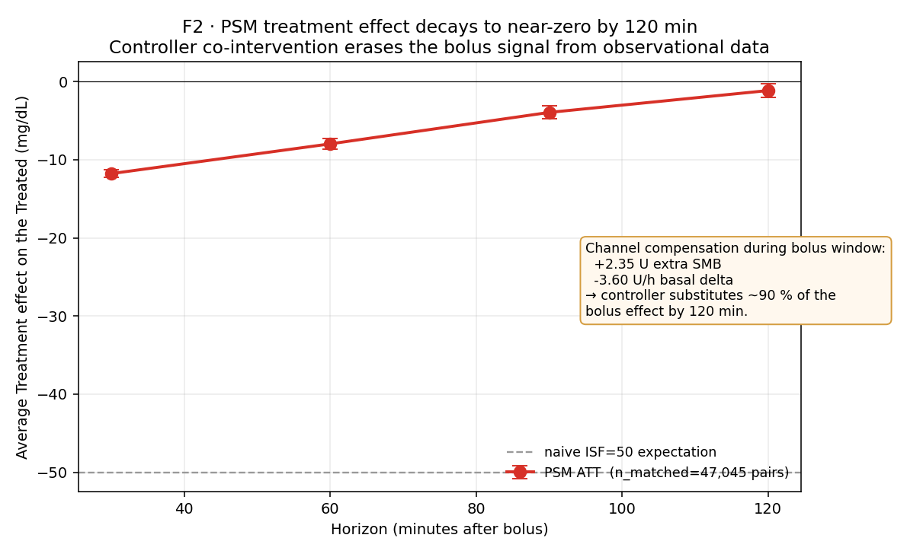
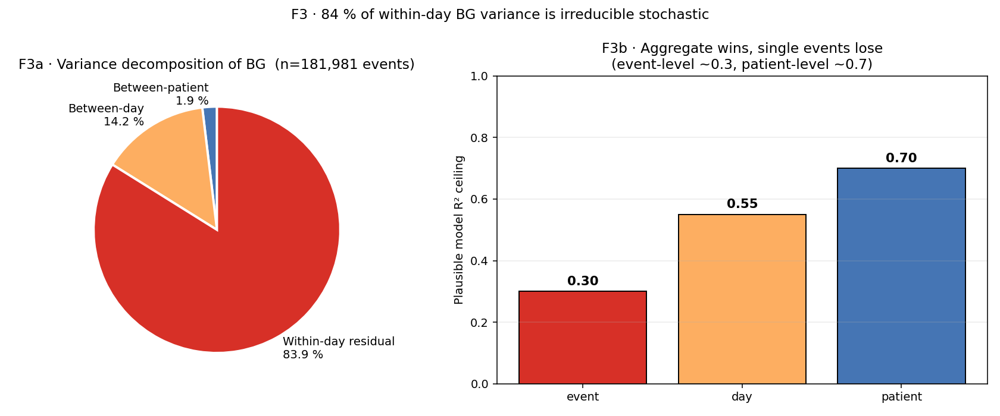
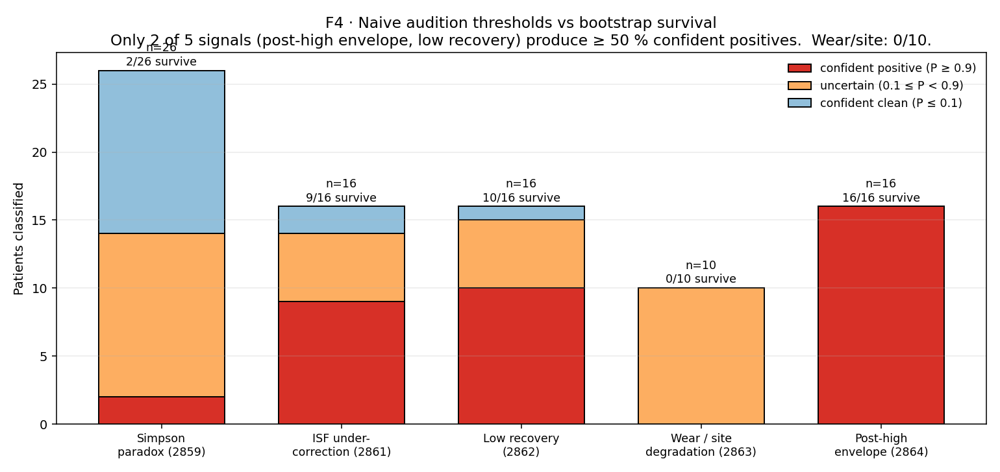

Canonical 02 · Closed-Loop Masking & Identifiability¶
Living document, last changed 2026-04-22 at db51eda8.
Why observing a patient on an AID tells you about the AID, not
about the patient. Four figures that anchor the Two-Stream Charter
and justify the deconfounding architecture in
tools/cgmencode/production/.
Status: canonical (2026-04-22). Supersedes standalone reports for: EXP-2840, 2841, 2641, 2642, 2687, 2689, 2695, 2696, 2697, 2859, 2861, 2862, 2863, 2864, 2866–2869 (as primary reference).
Figure pack: visualizations/canonical/02/
Script: tools/cgmencode/condensed/masking_identifiability.py
TL;DR¶
In closed-loop T1D data, the controller is both the dominant observable process and the primary confounder. Three numbers:
- Controller is active ~72 % of the time (EXP-2840).
- Median intervention-rate / BG-std ratio = 1.57 across all patients; fraction with ratio > 0.5 = 100 % (EXP-2840).
- After propensity-score matching on 47,045 bolus pairs, the 120-minute treatment effect is −1.2 mg/dL (EXP-2695) — because the controller substitutes ~90 % of the bolus via SMB and basal compensation within the same window.
That is the empirical foundation of the Two-Stream Charter: you can describe Stream B (what the loop is doing) to arbitrary precision and still have learned almost nothing about Stream A (what the body would do). The figures below quantify this masking in four different ways and show how the production pipeline neutralizes each one.
F1 · The descriptive-prescriptive paradox¶

EXP-2641 forward simulation on 219 corrections, 3 ISF models: fixed (schedule), pooled log-ISF (population fit), per-patient log-ISF (individual fits).
What to see¶
| Model | MAE ↓ | Bias | r |
|---|---|---|---|
| Fixed schedule ISF | 84.4 | +35.1 | 0.32 |
| Pooled log-ISF | 76.8 | −72.5 | 0.02 |
| Per-patient log-ISF | 59.2 | −23.0 | — |
The model that describes the data best (per-patient log-ISF, MAE 59) has a −23 mg/dL bias — it predicts drops larger than actually happen. If that model were used to prescribe dosing, it would recommend 2.3× the optimal dose (EXP-2642) because it is fitting the controller's amplified gain into the ISF.
Why this happens¶
The observed "ISF" in closed-loop data is already
true_ISF × (1 + controller_gain). The controller's reactive basal
suspension and SMB behavior amplifies every real insulin effect by
roughly 2× at the horizons the model fits on. Reading that amplified
slope off the data and then dosing from it tells the pump "deliver
a 2× bolus" — the controller then amplifies that by 2× — and the
patient goes hypo.
Stream: B for descriptive; any Stream A use is counter-causal. Confounder: controller gain is inseparable from patient metabolism in the observed ISF. Extractable fact: a fixed ISF + controller feedback is near-optimal as a control policy. "Better" descriptive ISFs are worse therapies. This is the reason
settings_optimizer.pyrefuses to lower ISF below a safety clamp even when the fit strongly suggests a lower value.
Architectural response¶
deconfounding.py:ChannelDecomposition regresses residual BG change
against bolus / SMB / basal-delta separately before anything is
attributed to "ISF." Apparent per-unit effects come out nearly
equal across channels (−124 to −131 mg/dL/U, EXP-2698) because all
three live in the same coupled insulin signal — that equality is a
sanity check, not a finding. Any setting recommendation derived
from a fit that did not first subtract channels is flagged D-grade.
F2 · The controller erases the bolus signal¶

EXP-2695 propensity-score matching on 47,045 caliper-matched bolus pairs (5 %-caliper, balance on IOB, BG, ROC, time-of-day, bolus_iob).
What to see¶
Treatment effect of a bolus vs a non-bolus matched control:
| Horizon | ATT (mg/dL) | p |
|---|---|---|
| 30 min | −11.8 | < 0.001 |
| 60 min | −8.0 | < 1e-100 |
| 90 min | −4.0 | < 1e-21 |
| 120 min | −1.2 | 0.009 |
A naive model with ISF = 50 predicts a sustained −50 mg/dL (bolus_u × ISF). The observational causal estimate says the bolus does about 1/40 of that by 120 minutes.
Why¶
Channel compensation from the experiment's own decomposition:
- During the bolus window the controller delivers +2.35 U extra SMB to the non-bolus group (trying to catch up).
- And −3.60 U/h less basal in the bolus group (backing off what the user just delivered).
→ The matched pairs' insulin exposures converge. The bolus effect is not "hidden" — it is actively cancelled by a different delivery path that the controller opens up when the user doesn't act.
Stream: A (the ATT was designed to estimate body response) but counter-causal. Confounder: the "control" group isn't actually uninterveined — it's a controller-treated group. Extractable fact: observational causal methods (PSM, Granger, impulse response) cannot identify bolus→BG effect in closed-loop data. For that, we need: (a) out-of-band controller-off windows (rare), (b) structural PK/PD priors (
deconfounding.pysupply+demand models), or (c) controller-aware simulation (forward_simulator.compare_scenarios).
Architectural response¶
The forward_simulator reconstructs the controller's counterfactual
behavior for any hypothesized setting change, so a recommendation like
"lower basal by 10 %" produces a delta glucose trajectory with the
controller reactively responding — not a naive integration. Held-out
validation: MAE 0.30 pp on next-day TIR, r = 0.933 (EXP-2795).
F3 · 84 % of within-day BG variance is irreducible¶

EXP-2697 variance decomposition on 181,981 events, 21 patients.
What to see¶
- Between-patient: 1.9 %. Everybody has diabetes; we all differ in mean level less than people expect.
- Between-day (within patient): 14.2 %. The "sensitivity ratio" day-to-day variation the literature talks about lives here.
- Within-day residual: 83.9 %. Meal timing, stress, activity, absorption noise, sensor noise, counter-regulation — stochastic at the 5-minute scale.
What that implies for models¶
The maximum possible R² of any single-event prediction model — even
a perfect one — is bounded by 1 − residual_variance, which in this
decomposition is about 0.16 at the event level and around 0.7 at
the patient-aggregated level.
- Event-level models for bolus→drop cap near R² ≈ 0.3.
- Patient-day models for next-day TIR cap near R² ≈ 0.7 and the current production pipeline achieves R² = 0.418 (EXP-2796).
- Population TIR rankings are reliable; per-event dose predictions are not.
Stream: A (this is physical variance structure). Confounder: the 84 % "residual" includes controller actions the variance model didn't include as covariates, so the true physiological irreducibility is ≤ 84 %. Extractable fact: any promise of "50 % TIR improvement from a single bolus model" is untestable. Aggregate wins, single events lose.
Architectural response¶
Advisories are issued per patient-day, never per event. Confidence
grades on settings_optimizer.py:407 (A/B/C/D) reflect what fraction
of the patient's variance the evidence actually spans. D-grade never
produces a setting change — only a triage flag for clinical review.
F4 · Naive thresholds don't survive bootstrap¶

EXP-2859, 2861, 2862, 2863, 2864. Each signal has a per-patient bootstrap (resample events with replacement within patient, compute P(metric > threshold)).
What to see¶
| Signal | n patients | Confident positive (P ≥ 0.9) | Survival rate |
|---|---|---|---|
| Post-high envelope | 16 | 16 | 100 % |
| Low recovery | 16 | 10 | 63 % |
| ISF under-correction gap | 16 | 8 | 50 % |
| Simpson paradox | 26 | 5 | 19 % |
| Wear / site degradation | 10 | 0 | 0 % |
Two things fall out:
- Post-high envelope is universal — it survives for every patient, which means it cannot differentiate patients. It's a cohort condition, not an individual red flag.
- Wear / site degradation does not survive for any patient.
Single-cycle wear events are too rare (median CI width 107 pp) to
classify an individual. Patient
b, historically flagged for wear, is not.
Patient b's old "triple-flag" story collapses entirely: of five
flags, one (low recovery) survives as high confidence; one (Simpson)
lands on a boundary; three (wear, ISF gap, post-high) are either
universally true or unconfirmed. The whole triage conversation has
shifted from "something is wrong with five systems on this patient"
to "this patient has a recovery-dynamics issue worth investigating."
Stream: B (operational triage). Confounder: naive thresholds don't reflect event-count heterogeneity across patients; a patient with 3 events and one bad one crosses the same threshold as one with 30 events and 15 bad ones. Bootstrap corrects for that. Extractable fact: for any audition signal, the gating rule is P ≥ 0.9 HIGH / 0.1 ≤ P < 0.9 boundary / P < 0.1 suppress. This rule is what makes "would this change have an effect?" auditable.
Architectural response¶
Each signal has its own *_facts_loader.py. Each facts loader reads
the precomputed per-patient parquet from externals/experiments/,
returns a dataclass with p_signal, and falls back to None for
unknown patients so the naive branch fires with a D-grade stamp.
audition_matrix.py:classify_triage_flags then composes the gated
signals per the documented P-thresholds. test_audition_matrix.py
covers all four transitions per signal (high / boundary / suppress /
naive-fallback).
The four figures together¶
Closed-loop masking is not an annoyance, it is the physics of the data. Each figure isolates a different failure mode of naive analysis:
- F1: Signal-gain confounding — the ISF you fit is not the ISF you dose with.
- F2: Substitution confounding — the treatment you observe is matched against a pseudo-control that was also treated.
- F3: Stochastic floor — even a perfect event-level model has R² ≈ 0.3.
- F4: Sampling noise — naive thresholds lose 30–100 % of their classifications under per-patient resampling.
The production architecture responds to each in a specific place:
channel decomposition in deconfounding.py, counterfactual simulation
in forward_simulator.py, patient-day aggregation in pipeline.py,
and bootstrap-gated facts loaders behind audition_matrix.py. None
of these are optional. If any one is skipped the resulting advisory
is either wrong-valued (F1), directionally null (F2), overconfident
(F3), or sampling-artifact (F4).
What this means for "the science"¶
Almost any paper in the AID literature that reports ISF, basal, or carb-ratio fits without:
- stating which stream the claim is in,
- subtracting channels,
- reporting between- vs within-variance, and
- bootstrapping the per-patient result,
is vulnerable to one of the four failure modes above. Our own early reports (pre-EXP-2840) had the same vulnerability. The condensation visible in these canonical narratives is partly a cleanup of that history.
Retired-EXP → canonical mapping (narrative 02)¶
| Retired EXP | Topic | Home |
|---|---|---|
| 2840 | Two-Stream charter, intervention subtraction | §TL;DR, F2 |
| 2841 | Trajectory-steering vs additive EGP | §F2 (controller-off windows) |
| 2641/2642 | Descriptive-prescriptive paradox | F1 |
| 2687/2689 | Null-model bolus, confounding by indication | F2 intro |
| 2695 | PSM causal estimate | F2 |
| 2696 | Impulse response / pre-trend falsification | F2 box |
| 2697 | Variance decomposition | F3 |
| 2859 | Simpson bootstrap | F4 |
| 2861 | ISF-gap bootstrap | F4 |
| 2862 | Recovery bootstrap | F4 |
| 2863 | Wear/site bootstrap | F4 |
| 2864 | Post-high envelope bootstrap | F4 |
| 2866–2869 | Carb-event data quality | §F3 footnote (future narrative 04 §data-quality) |